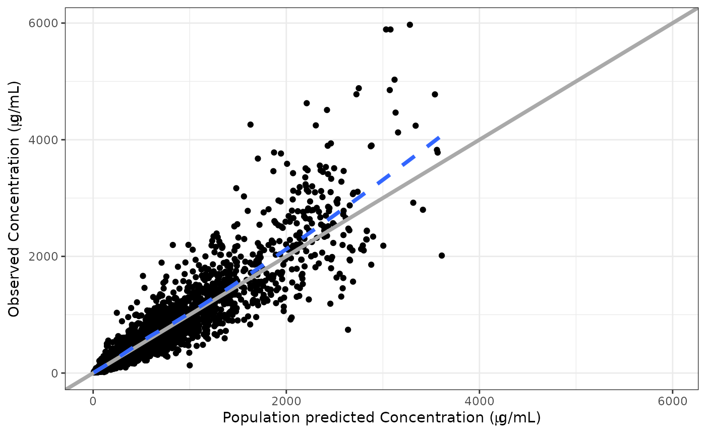

col//label is a way to select the column name in the
data set to use for plotting as well as the label to use for the axis in
the plot. This is a simple data structure that pmplots parses and uses
under the hood. Don’t worry about calling col_label()
yourself; we’ll just use it here to illustrate.
If we want to use weight from the data set and give it a nice name,
we can use the col//label format
x <- "WT // Weight (kg)"Here, we’ve put the column name to the left of // and
the axis label name to the right. pmplots will parse it like this
col_label(x)## [1] "WT" "Weight (kg)"and use the first item to select data from the data frame and the second to label your plot.
If you are making a simple plot and don’t want to add an additional label, pmplots will just use the column name as the axis label.
col_label("WT")## [1] "WT" "WT"You can use alternative separators
col_label("WT @@ Weight")## [1] "WT" "Weight"You can also include TeX code in the label part which can be utilized in certain plots
col_label("DV // Concentration ($\\mu$g/mL)")## [1] "DV" "Concentration ($\\mu$g/mL)"Note: you need the latex2exp package installed to make this work.
In the plot it would look like
dv_pred(pmplots_data_obs(), yname = "Concentration ($\\mu$g/mL)")## Loading required namespace: latex2exp## `geom_smooth()` using formula = 'y ~ x'